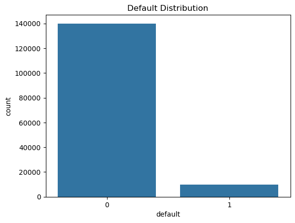
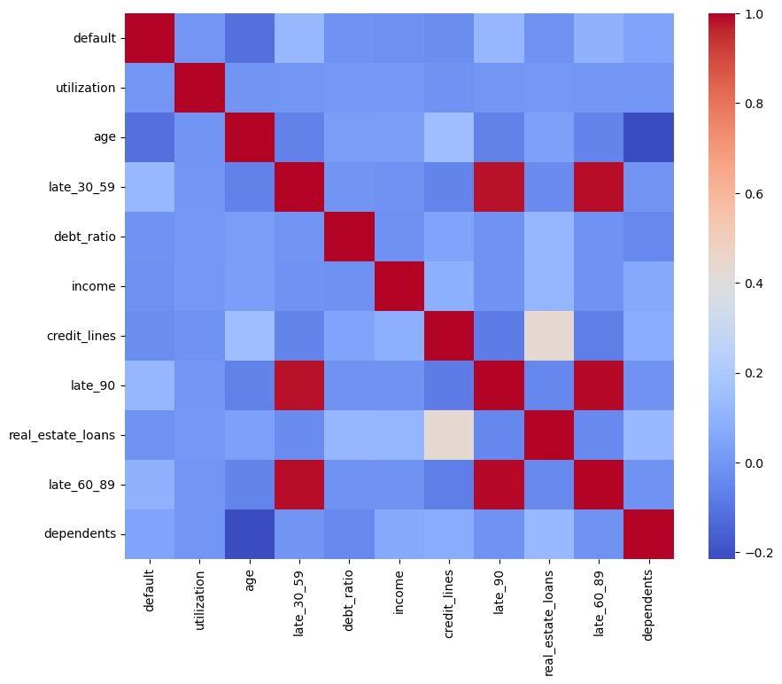
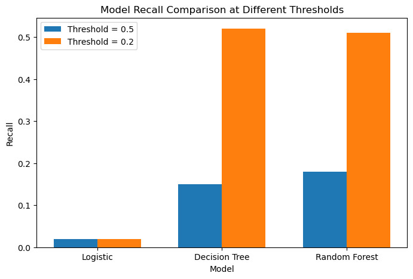
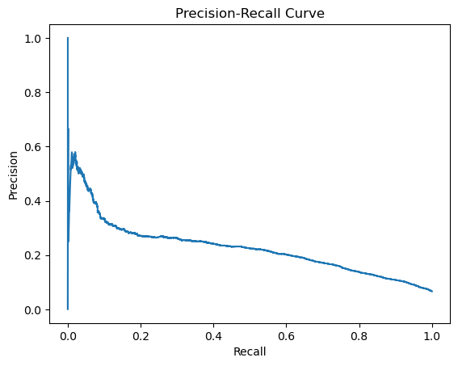

Classification · 2026
What Really Predicts Financial Default?
A 93%-accurate model that caught 2% of defaulters. What went wrong, what actually signals risk, and why the decision threshold mattered more than the algorithm.
Why this question
Working with Risk in Mind exposed me to how AI tools are used inside credit union environments. Those institutions are constantly deciding who is risky, who might default, and how early a warning sign can be caught before it becomes a loss. That made the question concrete: what are these models actually keying on?
The question is deeper than it sounds
"Can we predict default" is the easy version. A model will always produce predictions. The harder question is what those predictions rest on.
Specifically: is default risk driven by a borrower's financial position — income, debt ratio — or by their behavior, like repeated late payments and heavy credit utilization? The distinction changes what an institution can do about it. If risk is positional, it looks fixed. If it's behavioral, warning signs accumulate over time and can be caught early.
Accuracy was misleading
The baseline model scored roughly 93% accuracy. It also caught 32 of 1,983 actual defaulters — a recall of about 2%.
The dataset explains it: only 6.7% of individuals default. A model can score high on accuracy by predicting "no default" almost every time and being right by construction.

This was the turning point. A model can appear strong while failing at the one task that matters. For a lender, missing most defaulters is the expensive error, whatever the headline accuracy says.
What actually signals risk
I expected income and debt ratio to dominate. They didn't. The models consistently pointed at behavioral variables — borrowers with more frequent late payments and higher credit utilization were far more likely to default, and the pattern was much cleaner than anything the financial variables produced.

In the decision tree, close to 80% of split importance came from past late payments alone, with most of the remainder from credit utilization. Income and debt ratio contributed little.
Comparing models
Three models, same data: logistic regression as an interpretable baseline, then a decision tree and a random forest. At the default threshold, logistic regression recovered about 2% of defaulters, the decision tree about 15%, the random forest about 18%.

The threshold changes everything
The remaining gap was less about model choice than about the decision threshold. The default cutoff is 0.5 — flag only borrowers scoring above 50%. On imbalanced data, almost nobody clears that bar, so almost nobody gets flagged.
Dropping the threshold to 0.2 moved decision tree and random forest recall to roughly 50% — from missing most defaulters to catching half of them. Logistic regression barely moved, which says something about its ability to separate the classes at all.

What the trade-off means for a lender
Missing a defaulter costs money directly: unpaid loans, charge-offs, higher reserve requirements. Flagging a non-defaulter costs review time. Those are not symmetric.
A flag isn't a rejection — it's a trigger for adjusted loan terms, reduced exposure, or an extra check before approval. That asymmetry is why recall is the metric worth optimizing here, and why the 0.2 threshold is defensible despite the precision it gives up.
What I took away
The evaluation metric has to match the actual objective. Accuracy gave false confidence on imbalanced data; recall and ROC-AUC described what the model was really doing. And a model being technically correct is not the same as it being useful — the 93% figure was accurate and worthless simultaneously.
I also started with the wrong prior. Financial position felt like the obvious predictor of risk, and behavior turned out to matter more. Risk here is less a snapshot of someone's situation than a pattern that develops over time.
Data and tooling
The Give Me Some Credit dataset from Kaggle, predicting probability of financial distress over a two-year window. Python with pandas, NumPy, matplotlib, and scikit-learn. AI tools were used for code cleanup, debugging, and understanding random forests, which I hadn't worked with before.
← All projects